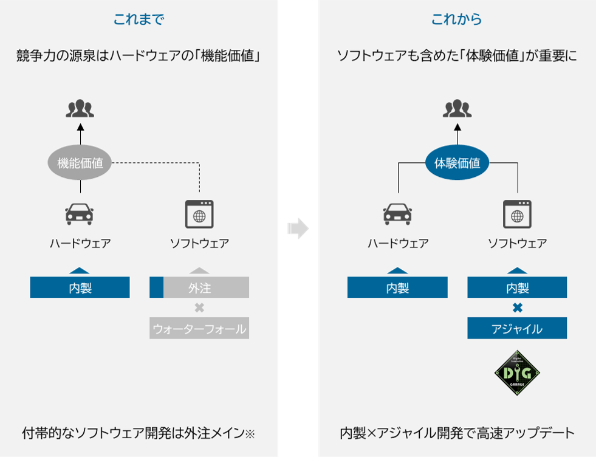
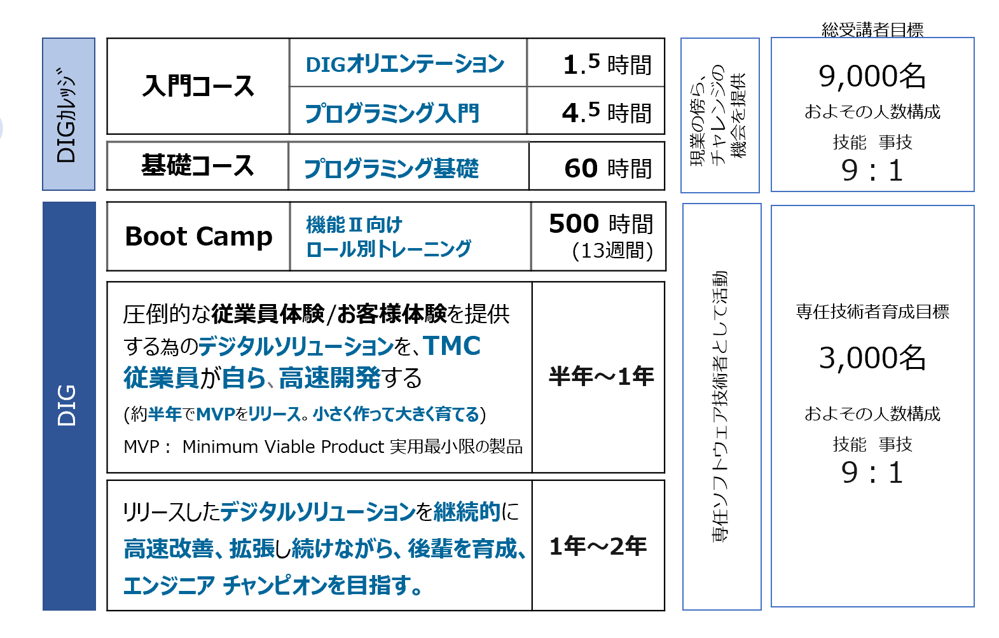
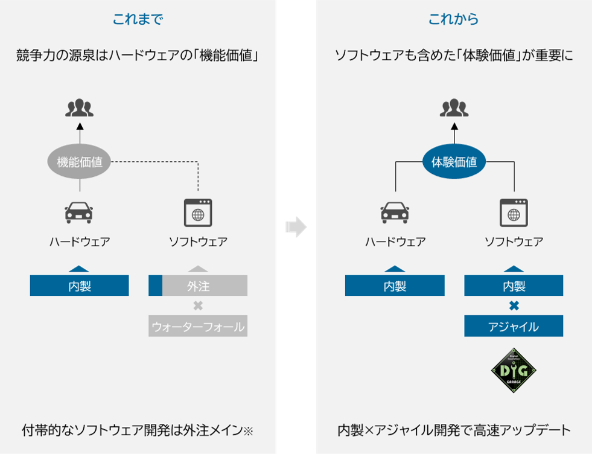
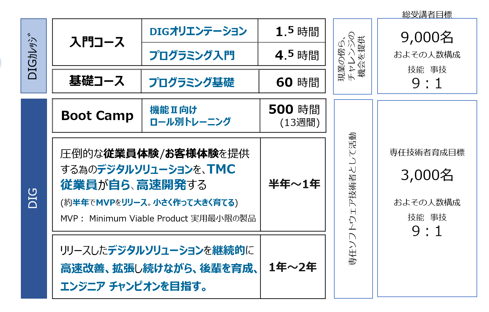

1.DIGとは
正式名称はデジタル イノベーション ガレージ（通称DIG：ディグ）
ソフトウエア開発を軸としたデジタルソリューションを高速開発し、高速改善する専任チーム。
今までのようにソフトウェア開発を外注するのではなく、TMC従業員自らが内製開発を行っています。
DIGの機能の一つとして、今後DIGで活躍する専任技術者の養成を担う『DIGカレッジ』があります。
正式名称はデジタル イノベーション ガレージ（通称DIG：ディグ）
ソフトウエア開発を軸としたデジタルソリューションを高速開発し、高速改善する専任チーム。
今までのようにソフトウェア開発を外注するのではなく、TMC従業員自らが内製開発を行っています。
DIGの機能の一つとして、今後DIGで活躍する専任技術者の養成を担う『DIGカレッジ』があります。
